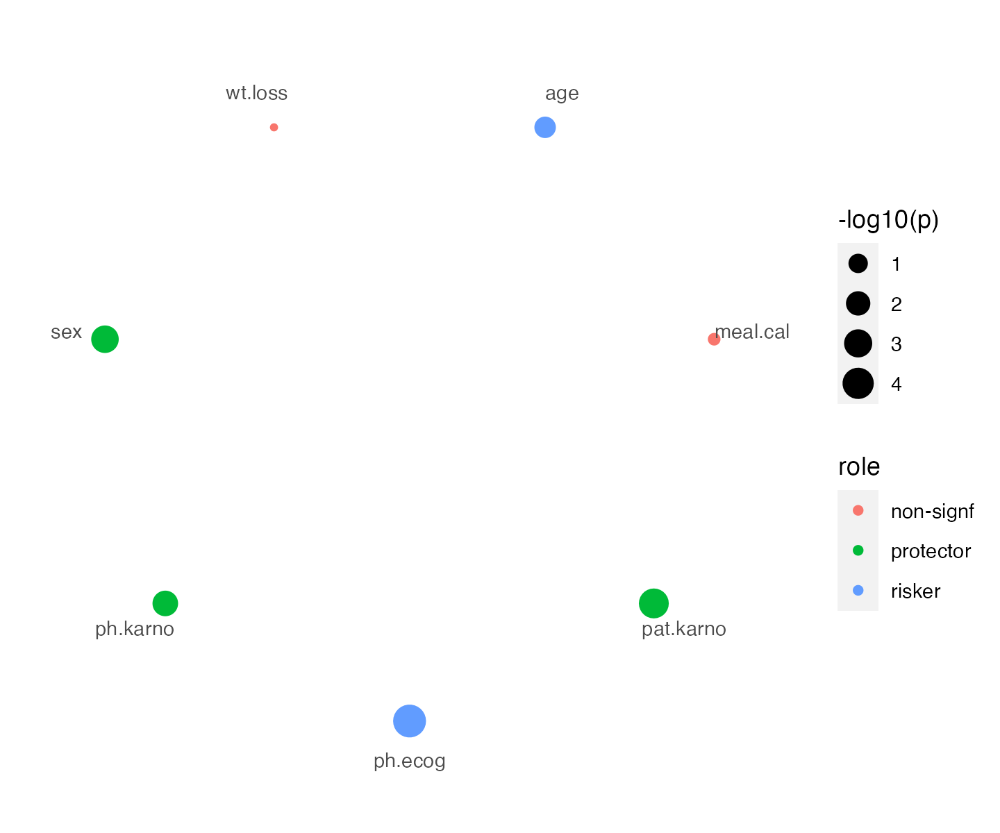
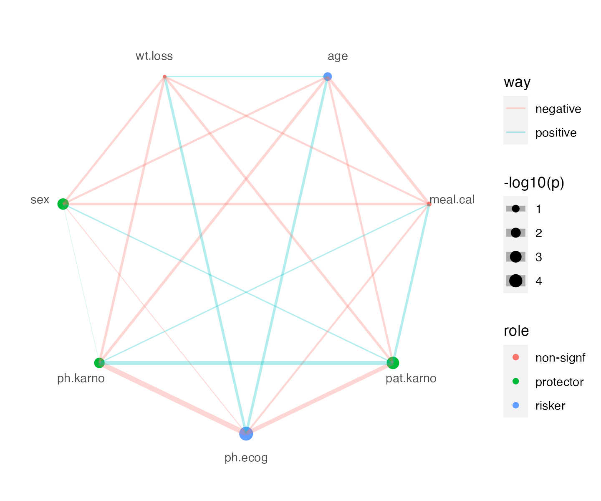

vignettes/surv-corr-connection.Rmd
surv-corr-connection.Rmd
library(ggpolar)
#> Loading required package: ggplot2
library(survival)
library(ezcox)
#> Welcome to 'ezcox' package!
#> =======================================================================
#> You are using ezcox version 1.0.2
#>
#> Project home : https://github.com/ShixiangWang/ezcox
#> Documentation: https://shixiangwang.github.io/ezcox
#> Cite as : arXiv:2110.14232
#> =======================================================================
#>
data = survival::lung
head(data)
#> inst time status age sex ph.ecog ph.karno pat.karno meal.cal wt.loss
#> 1 3 306 2 74 1 1 90 100 1175 NA
#> 2 3 455 2 68 1 0 90 90 1225 15
#> 3 3 1010 1 56 1 0 90 90 NA 15
#> 4 5 210 2 57 1 1 90 60 1150 11
#> 5 1 883 2 60 1 0 100 90 NA 0
#> 6 12 1022 1 74 1 1 50 80 513 0Pick several variables.
vars = c("age", "sex", "ph.ecog", "ph.karno", "pat.karno", "meal.cal", "wt.loss")
df_cox = ezcox(data, vars)
df_cox
#> # A tibble: 7 × 12
#> Variable is_control contrast_level ref_level n_contrast n_ref beta HR
#> <chr> <lgl> <chr> <chr> <int> <int> <dbl> <dbl>
#> 1 age FALSE age age 228 228 0.0187 1.02
#> 2 sex FALSE sex sex 228 228 -0.531 0.588
#> 3 ph.ecog FALSE ph.ecog ph.ecog 227 227 0.476 1.61
#> 4 ph.karno FALSE ph.karno ph.karno 227 227 -0.0164 0.984
#> 5 pat.karno FALSE pat.karno pat.karno 225 225 -0.0199 0.98
#> 6 meal.cal FALSE meal.cal meal.cal 181 181 -0.000124 1
#> 7 wt.loss FALSE wt.loss wt.loss 214 214 0.00132 1
#> # … with 4 more variables: lower_95 <dbl>, upper_95 <dbl>, p.value <dbl>,
#> # global.pval <dbl>
vars_comb = combn(vars, 2, simplify = FALSE)
cor_value = sapply(vars_comb, function(x) {
cor(data[[x[1]]], data[[x[2]]], use = "pairwise")
})
df_cor = cbind(as.data.frame(t(sapply(vars_comb, function(x) x))), cor_value)
colnames(df_cor) = c("var1", "var2", "correlation")
df_cor$size = abs(df_cor$correlation)
df_cor$way = ifelse(df_cor$correlation > 0, "positive", "negative")
df_cor
#> var1 var2 correlation size way
#> 1 age sex -0.12216709 0.12216709 negative
#> 2 age ph.ecog 0.19323604 0.19323604 positive
#> 3 age ph.karno -0.20318207 0.20318207 negative
#> 4 age pat.karno -0.12616688 0.12616688 negative
#> 5 age meal.cal -0.23141071 0.23141071 negative
#> 6 age wt.loss 0.03814787 0.03814787 positive
#> 7 sex ph.ecog -0.02060379 0.02060379 negative
#> 8 sex ph.karno 0.01138505 0.01138505 positive
#> 9 sex pat.karno 0.04607145 0.04607145 positive
#> 10 sex meal.cal -0.16835976 0.16835976 negative
#> 11 sex wt.loss -0.12907708 0.12907708 negative
#> 12 ph.ecog ph.karno -0.80726666 0.80726666 negative
#> 13 ph.ecog pat.karno -0.51122086 0.51122086 negative
#> 14 ph.ecog meal.cal -0.09851018 0.09851018 negative
#> 15 ph.ecog wt.loss 0.18758944 0.18758944 positive
#> 16 ph.karno pat.karno 0.52029737 0.52029737 positive
#> 17 ph.karno meal.cal 0.04223324 0.04223324 positive
#> 18 ph.karno wt.loss -0.17543452 0.17543452 negative
#> 19 pat.karno meal.cal 0.16575874 0.16575874 positive
#> 20 pat.karno wt.loss -0.17199064 0.17199064 negative
#> 21 meal.cal wt.loss -0.10257242 0.10257242 negative
df_cox$role = ifelse(
df_cox$p.value > 0.05, "non-signf",
ifelse(df_cox$HR < 1, "protector", "risker")
)
df_cox$`-log10(p)` = -log10(df_cox$p.value)
p = polar_init(df_cox, x = Variable, aes(color = role, size = `-log10(p)`))
p
p +
ggnewscale::new_scale("color") +
polar_connect(df_cor, x1 = var1, x2= var2, size = size, color = way, alpha = 0.3) +
scale_size(range = c(0.1, 4))
#> Scale for 'size' is already present. Adding another scale for 'size', which
#> will replace the existing scale.